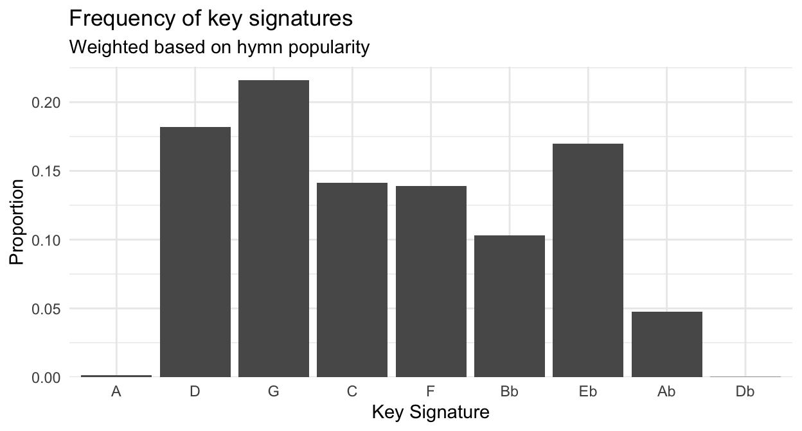
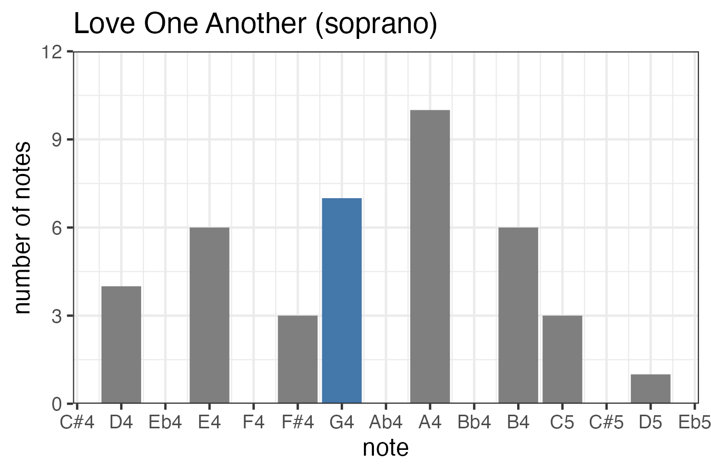
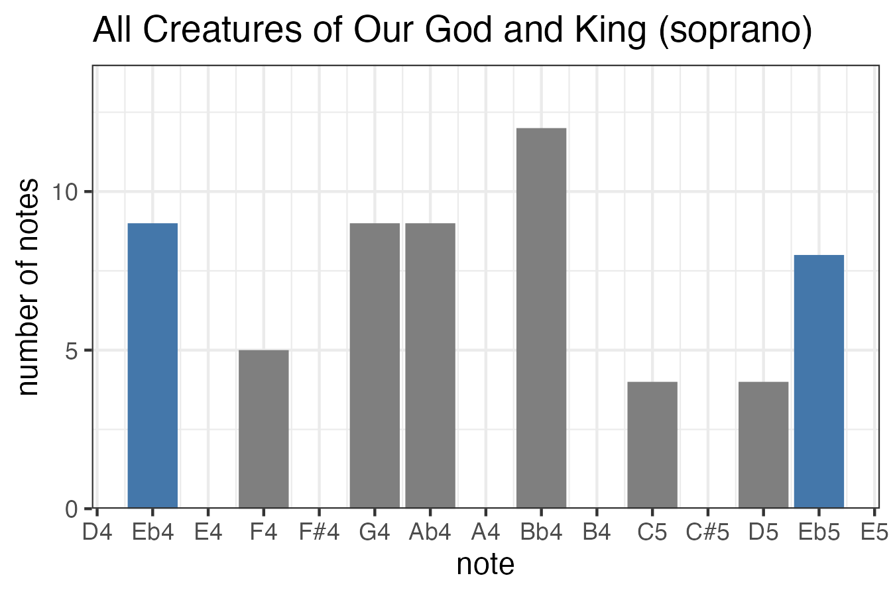
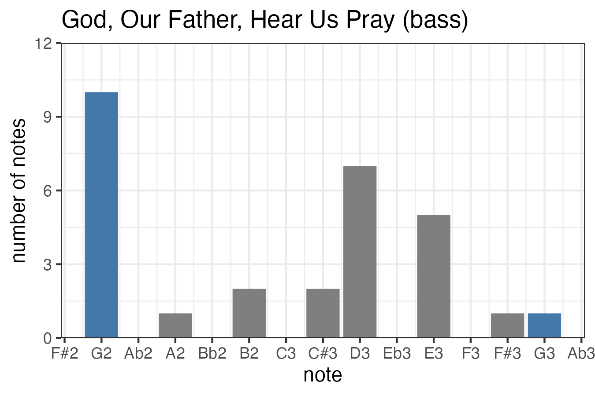
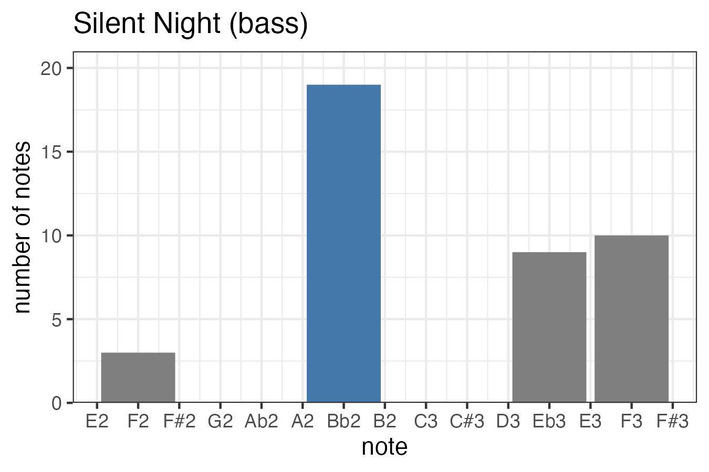
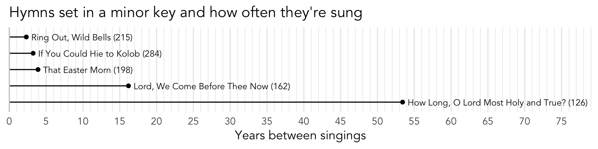

What are the most common key signatures?
key signatures
musicology
soprano line
bass line
Which key signatures are the most common and why? Which ones are people most likely to see? What hymns are in a minor key? In this post I take a deep dive into key signatures in our 1985 hymnal. (New hymns released since 2024 are not included here for now.)
What key signature is most common in the hymnal?
It doesn’t take any specialized skills to figure out what key signature is the most common, nothing more than flipping through the hymnal and tallying the key signatures up. To save you a sacrament meeting distraction, I went ahead did this for you, and Figure 1 shows the distribution of key signatures across the hymnal.
If you know the hymnal well, nothing about Figure 1 should come as a surprise. The modern hymnal tends to use key signatures that have few sharps or flats. There are about as many hymns in the D major as there are in C major and E♭ major. There are slightly fewer hymns in F and B♭ major for some reason. E♭ major is the standout because even though it has more flats than B♭ and F, it outnumbers those two. In general though, the further in the circle of fourths you go away from G major, the fewer hymns there are.
That wasn’t necessarily true of previous versions. For example, some hymns in the previous version (the blue hymnal) were in the key of E major with four sharps. Presumably they got rid of those because they were too hard for some accompanists to play.
Two key signatures are marginal in the hymnal. The key of A major, with three sharps, is only found in two hymns: the men’s chorus arrangement of
The other marginal key signature is D♭ and, again, just two hymns are in that key.
For what it’s worth, there is one hymn that actually changes keys partway though.
But do we actually see G major the most?
So we’ve addressed the question of what key signature the most number of hymns are set to. But, does that actually mean that’s the most that we see? What’s the difference? It may be the case that tons of hymns in G major are really obscure ones that hardly anyone ever sees. So, if we take frequency into account, perhaps another key is seen more often, even if fewer hymns are actually in it.
(An analogy here is that Figure 1 is like the Senate: equal representation of all states, regardless of population. In this case, all hymns are treated equally, regardless of how often they’re sung. Figure 2 is like the House of Representatives: representation based on population, or in this case, how often a hymn is sung.)

Figure 2 looks similar to Figure 1 except I’ve adjusted the heights of the bars based on how frequent each hymn is. If a hymn is more common, it’ll raise the bar for its key signature more. If it’s less common, it’ll raise it less.
While superficially the two plots may look similar, there are some important differences. (See Table 1 as well.) First, D major is closer in height to G major. While only about 16.5% of the hymns are in D, they’re sung about 18.3% of the time. This is likely due to some pretty common sacrament hymns like
Most of the other key signatures are pretty similar. C major and F major are more or less unchanged. Though 11.47% of hymns are set in B♭ major, they’re only sung about 10.34% of the time. And while A♭ major is only used in 5.59% of the hymns, it’s sung 4.85% of the time in sacrament meeting. (No doubt,
Perhaps the biggest change is that E♭ is a bit more commonly seen than you’d expect based on how many hymns there are in it. 14.41% of hymns are in E♭, but 16.91% of the hymns actually sung in sacrament meeting are in E♭. Undoubtedly, it’s because nine of the 28 sacrament hymns are in E♭. So, to put it another way, on average, hymns in E♭ major are more common than hymns in C major or even B♭ major.
Finally, the fact that the keys of A and D♭ major are mere slivers in Figure 2 reflects what was explained above that they’re really uncommon.
Figure 2 probably has the most useful application out of anything else in this blog post. If you’re a budding musician and are still getting used to key signatures, the good news is that you don’t have to learn all twelve keys to play the hymnal. If you focus your efforts on hymns in G, D, and E♭, you’ll get the most mileage out of your practice.
| Key Signature | # of hymns | % of hymnal | % of hymns sung |
|---|---|---|---|
| A | 2 | 0.59% | 0.14% |
| D | 56 | 16.47% | 18.17% |
| G | 76 | 22.35% | 21.59% |
| C | 49 | 14.41% | 14.15% |
| F | 48 | 14.12% | 13.89% |
| Bb | 39 | 11.47% | 10.30% |
| Eb | 49 | 14.41% | 16.96% |
| Ab | 19 | 5.59% | 4.77% |
| Db | 2 | 0.59% | 0.02% |
Why is G major the most common?
I’m not a musicologist, but I can speculate as to why G is more common than C. It may be the case that many melodies are centered around the tonic, and extend roughly a fifth above it and roughly a fourth or fifth below it, with a total range of about an octave. If that’s the case, and a comfortable octave for many singers is from D to D, that means the key of G would be an appropriate key signature. A good example of this is


Other melodies also span a full octave but the highest and lowest notes are the tonic itself. A good example of this is
So, it may be the case then that the reason why G major is the most common key is because there are more melodies like
Along similar lines, if a piece is set to the key of G, the basses get to end the piece on a strong low note that many men, particularly men who sing bass lines, can hit. It’s nice to end a piece with the tonic being the lowest note of the bass line, and the entire hymn. Some examples of these hymns include


What about minor keys?
You can see the five hymns in a minor key in Figure 5. The most common is the New Year’s Day hymn,
Although, if your ward ever does one of those musical testimony meetings where people get up and say what their favorite hymn is and then everyone sings a verse of that, I suspect you’re pretty much guaranteed to sing it then.

So, if you sing a hymn in a minor key, it’s probably one of the two holiday ones or
In fact, it was set to a different tune, in a major key, in the 1948 hymnal. It’s hymn #257. I don’t know how popular it was prior to 1985 though.
Conclusion
The most common key signature in the hymnal and in the hymns that we sing in church is G major. It may be because many melodies are centered around the tonic and span about half an octave below it and half an octave above it.